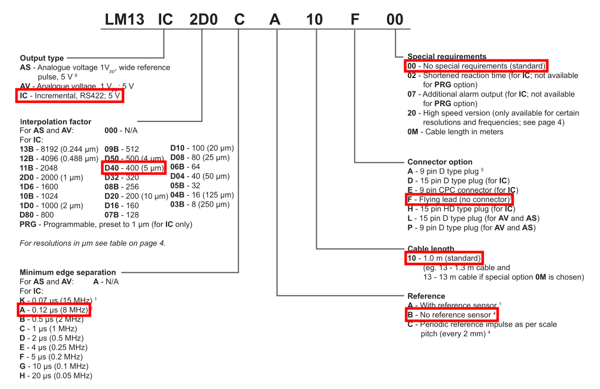

Modules
UART
Four devices make use of serial communication: a textual UART for debugging messages, two wheel encoders, and one steering encoder. Among these, however, only the debugging UART is directly interfaced with the STM serial controller:
| Interface | TX Pin | RX Pin | Baud Rate | Description |
|---|---|---|---|---|
| UART4 | PA12 | PA13 | 115200 | Debugging messages |
The serial signal from the wheel encoders instead, is decoded by transceivers on the DAS board that, in turn, feed two timer channels each that operate in Encoder Mode. Further details on the interfacing with timers are given in the Timer section, while information on their decoding is available in the Encoders section.
| Device | Protocol |
|---|---|
Wheel Encoders (LM13ICD40AB10F00) |
RS422 |
Steer Encoder (RM44SC0012B10F2F10) |
RS422 |
Timers
List of STM timers employed:
| Timer | Mode | Pins | Description |
|---|---|---|---|
| TIM2 | Combined Channels: Encoder Mode | PA15 (CH1), PB3 (CH2) | Left wheel encoder |
| TIM5 | Combined Channels: Encoder Mode | PA0 (CH1), PA1 (CH2) | Right wheel encoder |
| TIM10 | Channel1: PWM Generation CH1 | PB8 | Buzzer PWM output |
Buzzer
As required by the rulebook, the ECU must beep a buzzer for at least (?) ...
The buzzer is driven by a MOSFET operated via the PWM output generated by the TIM10 timer on pin PB8, and powered by the 12V line.
CAN
Fenice's internal networks operate on two CAN buses.
Networks
| Network | Interface | CAN_TX Pin | CAN_RX Pin |
|---|---|---|---|
| Primary | CAN1 | PD1 | PD0 |
| Secondary | CAN3 | PB4 | PA8 |
Bit Timing Parameters
- APB1 Peripheral Clock (PCLK1): 54 MHz
- Prescaler: 3
- Time Quantum is therefore 55.555 ns
- Time Quanta in Bit Segment 1: 12
- Time Quanta in Bit Segment 2: 5
- Time for one bit is therefore 999.99 ns
- Baud rate is therefore 1000000 bps (1 Mbit/s)
- ReSynchronization Jump Width: 1
Messages
For the list and definition of all CAN messages please refer to the can-cicd documentation.
SPI
The SPI interface is used to communicate with the Traction Control Unit and exchange information on vehicle state and motor torque. Since the TCU runs on a Raspberry Pi which is, by design, only capable of operating as a Master node, the ECU acts as the Slave node.
| Interface | CLK Pin | ... |
|---|---|---|
| ... |
For more information on how and what information is exchanged, please refer to the Traction Control section below.
IMU
This module records the acceleration data coming from the Inertial Measurement Unit (IMU) sensor over the CAN network.
Namely, it receives: - Linear acceleration on the three directions - Gyroscopic acceleration on the three axes
Sensor Configuration
In order to work properly, the sensor needs to be configured with the following parameters: - Sampling frequency: ? - ...
IRTS
Four Infra-Red Temperature Sensors (IRTSs) are pointed toward the tires and measure their temperature gradient using 8 (?) channels each (...)
Inverters
The Inverters and the ECU communicate over the CAN network and exchange the following information: - The ECU periodically (at which freq. ?) sends two torque values to be applied to the motors, one for the left side and one for the right side - The inverters periodically (every 100ms) report the contents of their status register (more details below) - The inverters periodically (every 100ms) report the output voltage at which they are driving the motors
Status Register Contents
| Bit | Symbol | Description |
|---|---|---|
| 0 | Ena | Drive Enable |
| 1 | RcR0 | Speed limit to zero |
| 2 | Lim+ | Limited switch + tripped |
| 3 | Lim- | Limited switch - tripped |
| 4 | OK | Drive okay |
| 5 | Icns | Current is limited to the continuous current level |
| 6 | T-Nlim | Speed limit torque mode active |
| 7 | P-N | Position control active |
| 8 | N-I | Speed control active |
| 9 | <N0 | Actual speed is less than 0.1% |
| 10 | Rsw | Reference switch tripped |
| 11 | Cal0 | Calibration move active |
| 12 | Cal | Calibration move completed |
| 13 | Tol | Position within tolerance window |
| 14 | Rdy | Drive ready (BTB/RDY contact closed) |
| 15 | Brk0 | Unexcited brake with motor active |
| 16 | SignMag | Speed internally inverted |
| 17 | Nclip | Speed limiting enabled (N-Lim < 90%) |
| 18 | Nclip+ | Speed limiting (+) via input switch enabled |
| 19 | Ncip- | Speed limiting (-) via input switch enabled |
| 20 | Ird-Dig | Current limiting via input switch enabled |
| 21 | Iuse-rchd | Actual current limit reached |
| 22 | Ird-N | Current derating to cont. current via speed limit enabled |
| 23 | Ird-TI | Current derating to cont. current due to igbt temp. enabled |
| 24 | Ird-TIR | Current derating to cont. current due to igbt temp. active |
| 25 | >10Hz | Current derating to cont. current at rotation freq. < 10 Hz active |
| 26 | Ird-TM | Current derating to cont. current due to motor temp. active |
| 27 | Ird-Ana | Current derating due to analog input (if <= 90%) possible |
| 28 | Iwcns | Current peak value warning |
| 29 | RFEpulse | Pulsed RFE - input monitoring active |
| 30 | M+d | vacant |
| 31 | HndWhl | Hand-wheel function selected |
Current-Torque Curve and Power Limiting
Note
Controlling the inverters by torque or current is equivalent
Since, for a given current, power absorption of the motors is proportional to their rotational speed, and given that inverters are controlled in torque/current mode, care must be taken not to request more than the allowed limit of 80 KWh.
More details on the matter are available in this report:
Essentially, requesting the maximum available current of 200A per motor when the angular velocity is above 4000 RPM causes the power to exceed the allowed limit. To overcome this issue, the following equation must then be followed to obtain the correct torque limit at each rotational speed:
At this point, the current value must be converted into a 16-bits integer to be sent to the inverters, which is a percent value of the characteristic maximum current of the device, equal to 423A (e.g., 50% = +32768 = 212.5A). Consequently, the maximum current of 200A (corresponding to the 47.3% of the maximum peak) will be represented as 15493. Some clarifying examples follow:
| Current | Percent | int16 |
|---|---|---|
| -423 A | -100% | -32768 |
| 0 A | 0% | 0 |
| 200 A | +47.2% | +15493 |
| 423 A | +100% | +32768 |
PCU
This module controls all communication (via CAN-Bus) between the ECU and the Pedal Control Unit (PCU). More specifically: - ADC brake and accelerator values are read and scaled from 0 to 100 - Errors and Warnings are checked (e.g. implausibility) - Calibration values are read/written from/to the EEPROM and sent/received
Tractive System
The TC code handles the generation and delivery of messages concerning the status of the BMS-HV (PRECHARGE, TS-ON, TS-OFF, ...).
Traction Control
Since the actual software for controlling the traction of the vehicle runs on a separate device (for reliability purposes), the ECU and the Traction Control Unit (TCU) need to constantly exchange a number of values.
| Parameter Name | Direction | Description |
|---|---|---|
| Brake | ECU -> TCU | How much the brake pedal is pressed |
| ... |
Further technical details on how this data is exchanged over SPI can be found at the TCU Protocol page.
Encoders
Magnetic rotative encoders are used to read angular speed from wheels and absolute position from steering.
Wheels
Wheel encoders are composed of a magnetic ring and a read head. Following, is the data-sheet of the read head where its characteristics are described:
Decoding the part number (LM13ICD40AB10F00) and referencing the various tables gives the following key points:

Most importantly, we must note that at maximum measurable speed (18.67 m/s, on the ring), each timer will be fed with two 8 MHz signals, leading to 4 million increments/decrements per second. TIM2 and TIM5 have been chosen specifically for their 32-bits counter registers (in contrast with other timers' 16-bits counters) so that they can receive up to 4'294'967'296 pulses before overflowing (instead of 65536 for 16 bits). Consequently, while 16 bit timers would need to be read and reset at most every 16 milliseconds, TIM2 and TIM5 could allow for correct counting for over 17 minutes. Nonetheless, for efficient decoding and to avoid periodic overflows, timer counters should be reset to 0 after every read, which as said, is now free to happen at lower frequencies than every 16 milliseconds, if needed.
For information on timer configuration on the STM, see the Timers section.
Steering
...